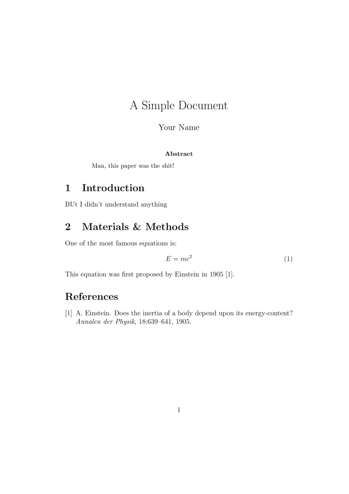

Scientific documents with \(\LaTeX\)¶
Introduction¶
In your research, you will produce papers, reports and—very importantly—your thesis. These documents can be written using a WYSIWYG (What You See Is What You Get) editor (e.g., Word). However, an alternative especially suited for scientific publications is LaTeX. In LaTeX, the document is written in a text file (.tex) with certain typesetting (tex) syntax. Text formatting is done using markups (like HTML). The file is then “compiled” (like source code of a programming language) into a file – typically in PDF.
Why \(\LaTeX\)?¶
A number of reasons:
The input is a small, portable text file
LaTeX compilers are freely available for all OS’
Exactly the same result on any computer (not true for Word, for example)
LaTeX produces beautiful, professional looking docs
Images are easy to embed and annotate
Mathematical formulas (esp complex ones) are easy to write
LaTeX is very stable – current version basically same since 1994! (9 major versions of MS Word since 1994 – with compatibility issues)
LaTeX is free!
You can focus on content, and not worry so much about formatting while writing
An increasing number of Biology journals provide \(\LaTeX\) templates, making formatting quicker.
Referencing (bibliography) is easy (and can also be version controlled) and works with tools like Mendeley and Zotero
Plenty of online support available – your question has probably already been answered
You can integrate LaTeX into a workflow to auto-generate lengthy and complex documents (like your thesis).

Limitations of \(\LaTeX\)¶
It has a steeper learning curve.
Can be difficult to manage revisions with multiple authors – especially if they don’t use LaTeX! (Cue: Windows on a virtual machine!)
Tracking changes are not available out of the box (but can be enabled using a suitable package)
Typesetting tables can be a bit complex.
Images and floats are easy to embed, and won’t jump around like Word, but if you don’t use the right package, they can be difficult to place where you want!
Installing LaTeX¶
Type this in terminal:
sudo apt-get install texlive-full texlive-fonts-recommended texlive-pictures texlive-latex-extra imagemagick
It’s a large installation, and will take some time.
We will use a text editor in this lecture, but you can use one of a number of dedicated editors (e.g., texmaker, Gummi, TeXShop, etc.) There are also WYSIWYG frontends (e.g., Lyx, TeXmacs).
Overleaf is also very good (and works with git), especially for collaborating with non LaTeX-ers (your university may have a blanket license for the pro version).
A first LaTeX example¶
\(\star\) In your code editor type the following in a file called FirstExample.tex and save it in a suitable location in your coursework directory (e.g, /Week1/Code/):
\documentclass[12pt]{article}
\title{A Simple Document}
\author{Your Name}
\date{}
\begin{document}
\maketitle
\begin{abstract}
This paper must be cool!
\end{abstract}
\section{Introduction}
Blah Blah!
\section{Materials \& Methods}
One of the most famous equations is:
\begin{equation}
E = mc^2
\end{equation}
This equation was first proposed by Einstein in 1905
\cite{einstein1905does}.
\bibliographystyle{plain}
\bibliography{FirstBiblio}
\end{document}
Now, let’s get a citation for this paper:
\(\star\) In Google Scholar, go to “settings” (upper right corner) and choose BibTeX as bibliography manager. Then type “energy of a body einstein 1905”
The paper should be the one on the top.
Click “Import into BibTeX” should show the following text, that you will save in the file FirstBiblio.bib (in the same directory as FirstExample.tex):
@article{einstein1905does,
title={Does the inertia of a body depend upon its energy-content?},
author={Einstein, A.},
journal={Annalen der Physik},
volume={18},
pages={639--641},
year={1905}
}
Now we can create a .pdf of the article.
\(\star\) In the terminal type (make sure you are the right directory!):
pdflatex FirstExample.tex
pdflatex FirstExample.tex
bibtex FirstExample
pdflatex FirstExample.tex
pdflatex FirstExample.tex
This should produce the file FirstExample.pdf:

A bash script to compile LaTeX¶
You can of course write a useful little bash script to compile latex with bibtex!
Type the following script and call it CompileLaTeX.sh (you know where to put it!):
#!/bin/bash
pdflatex $1.tex
pdflatex $1.tex
bibtex $1
pdflatex $1.tex
pdflatex $1.tex
evince $1.pdf &
## Cleanup
rm *~
rm *.aux
rm *.dvi
rm *.log
rm *.nav
rm *.out
rm *.snm
rm *.toc
How do you run this script? The same as your previous bash scripts, so:
Why have I not written the .tex extension of FirstExample in the command above? Can you make this bash script more convenient to use?
A few \(\LaTeX\) basics¶
Spaces, new lines and special characters¶
Several spaces in your text editor are treated as one space in the typeset document
Several empty lines are treated as one empty line
One empty line defines a new paragraph
Some characters are “special”: # $ % ^ & _ { } ~ \
To type these special characters, you have to add a “backslash” in front, e.g., \$ produces \(\$\).
Document structure:¶
Each LaTeX command starts with \ . For example, to get \(\LaTeX\), you need
\LaTeXThe first command is always
\\documentclass`` defining the type of document (e.g.,article, book, report, letter).You can set several options. For example, to set size of text to 10 points and the letter paper size:
\documentclass[10pt,letterpaper]{article}.After having declared the type of document, you can specify packages you want to use. The most useful are:
\usepackage{color}: use colors for text in your document.\usepackage{amsmath,amssymb}: American Mathematical Society formats and commands for typesetting mathematics.\usepackage{fancyhdr}: fancy headers and footers.\usepackage{graphicx}: include figures in pdf, ps, eps, gif and jpeg.\usepackage{listings}: typeset source code for various programming languages.\usepackage{rotating}: rotate tables and figures.\usepackage{lineno}: line numbers.Once you select the packages, you can start your document with
\begin{document}, and end it with\end{document}.
Typesetting math¶
There are two ways to display math
Inline mathematics (i.e., within the text).
Stand-alone, numbered equations and formulae.
For inline math, the “dollar” sign flanks the math to be typeset. For example, the code:
$\int_0^1 p^x (1-p)^y dp$
becomes \(\int_0^1 p^x (1-p)^y dp\)
For numbered equations (almost always a great idea), LaTeX provides the
equation environment:
\begin{equation}
\int_0^1 \left(\ln \left( \frac{1}{x} \right)
\right)^y dx = y!
\end{equation}
becomes
LaTeX templates¶
There a lots of useful LaTeX templates out there. I have added some templates in the TheMulQuaBio repo that you should have a look and play around with. Or just google “latex template” along with the name of a journal you want!
A few more tips¶
The following tips might prove handy:
LaTeX has a full set of symbols and operators (plenty of lists online)
Long documents can be split into separate
.texdocuments and combined usinginputLong documents can be split into separate
.texdocuments and Figures can be included using thegraphicxpackageYou can use Mendeley or Zotero to export and maintain
.bibfilesYou can redefine environments and commands in the preamble
Practicals¶
First \(\LaTeX\) example
Test CompileLaTeX.sh with FirstExample.tex and bring it under verson control underweek1 in your repository. Make sure that CompileLaTeX.sh will work if somebody else ran it from their computer using FirstExample.tex as an input.
Practicals wrap-up
Make sure you have your Week 1 directory organized with Data, Sandbox and Code with the necessary files and this week’s (functional!) scripts in there. Every script should run without errors on my computer. This includes the five solutions (single-line commands you came up with) in UnixPrac1.txt.
Commit and push every time you do some significant amount of coding work (after testing it), and then again before the given deadline (this will be announced in class).
Readings & Resources¶
The Overleaf templates (many Imperial College Dissertation templates available there).
Myriad online resources for LaTeX, including:
The Overleaf knowledge base, including